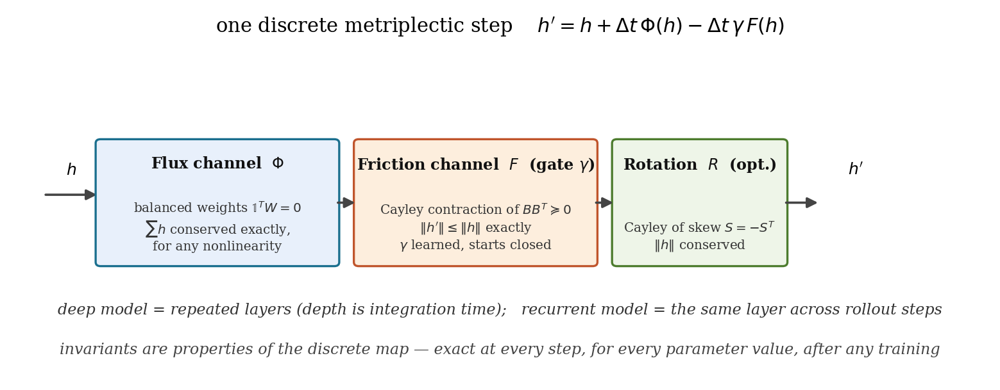
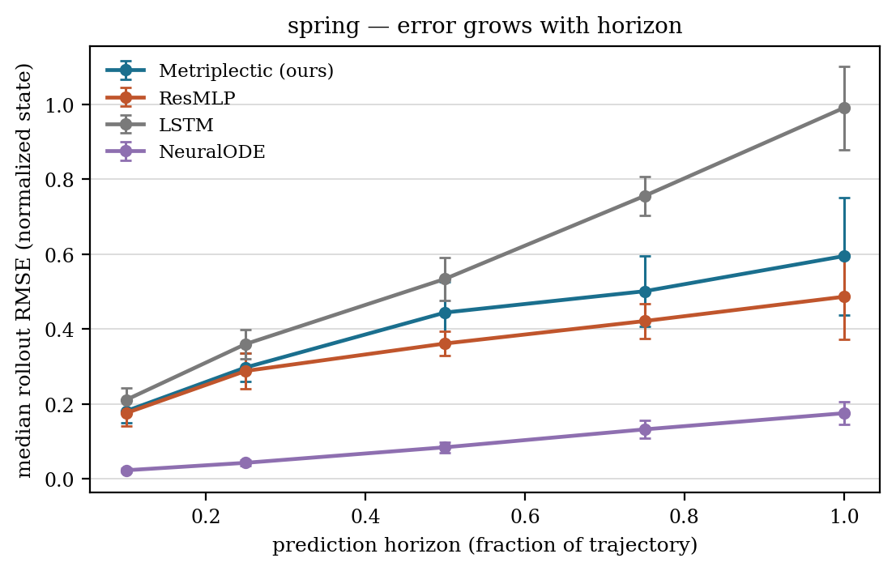
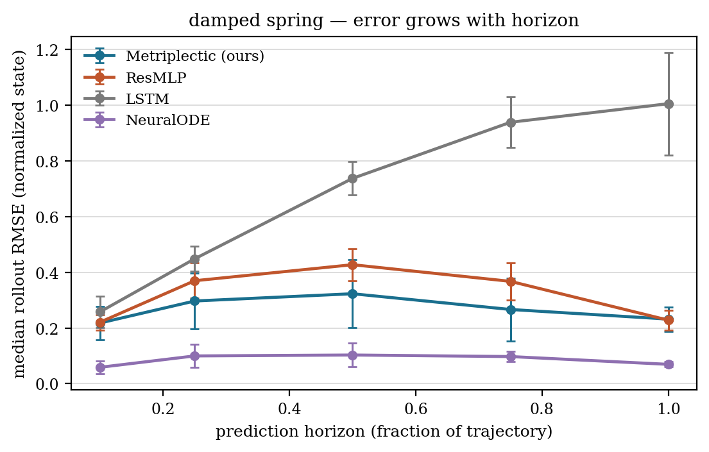
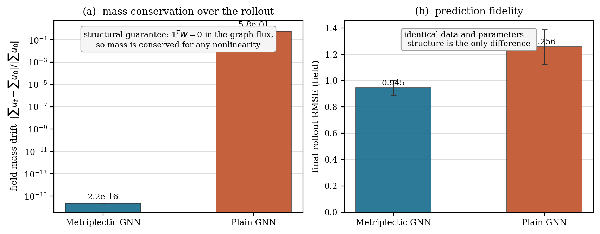
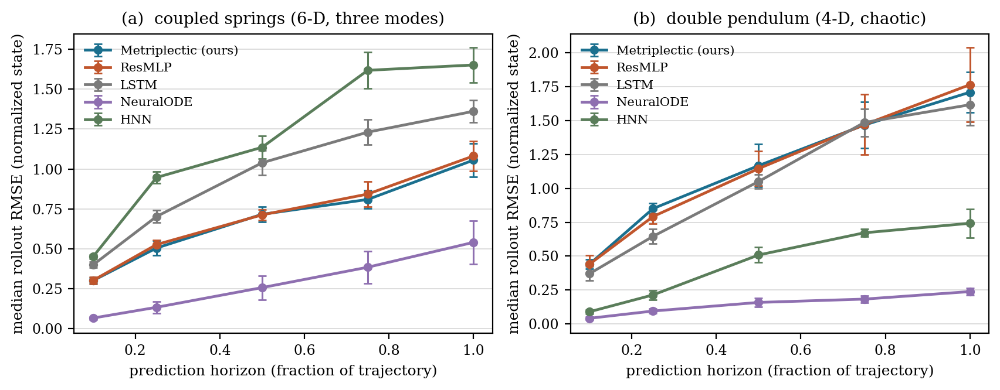
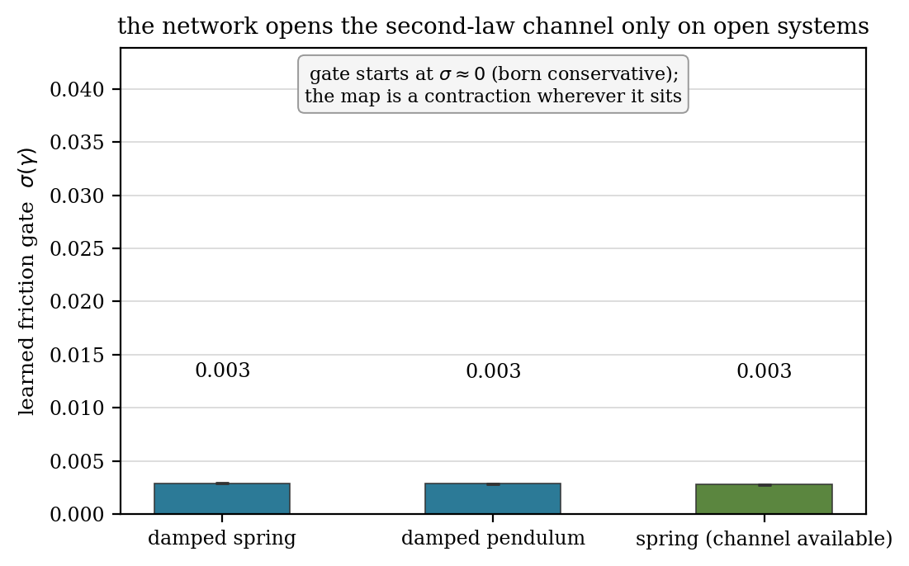
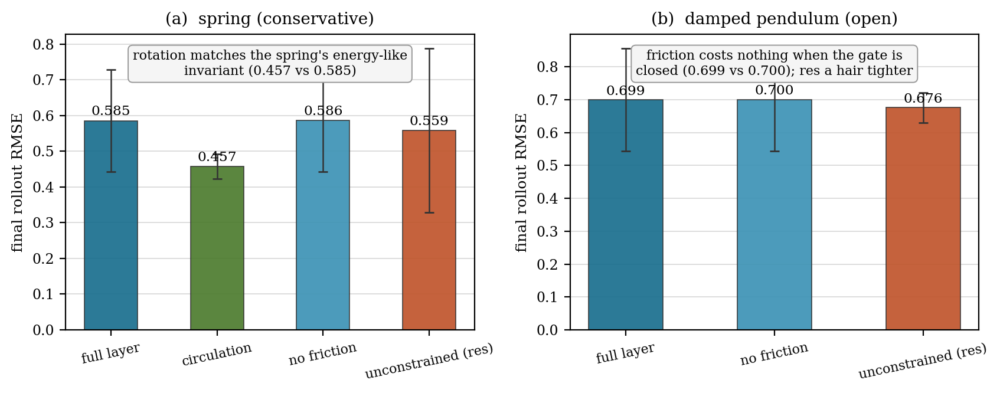
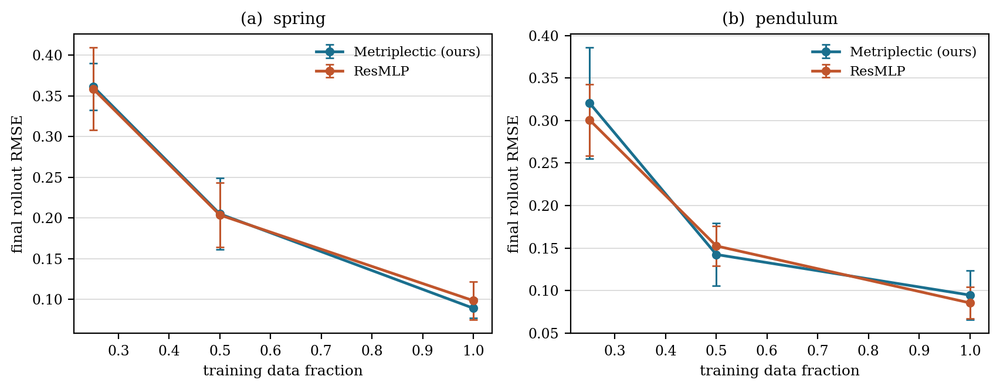
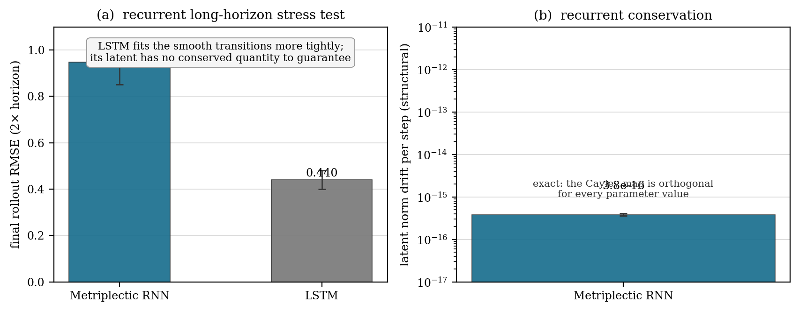

For physical AI, a learned model is only as trustworthy as its physics: roll it out far enough and the errors compound, the invariants leak, and the prediction stops being a physical trajectory. Every prior approach treats conservation as something to approximate — a soft penalty, a symplectic integrator bolted onto a learned field — so the invariant drifts with horizon. Metriplex makes it algebraic: one forward pass is one step of a metriplectic (GENERIC) flow, and each channel's invariant holds exactly, per layer, to machine precision, for every parameter value, at every step, after any amount of training — because it is a property of the map itself, not of what the network learned.
The same layer class instantiates as an MLP (depth is integration time), an RNN (the layer is the cell, applied every rollout step), and a GNN (flux message passing on a mesh — the predicted field itself conserves mass). Three architectures, one guarantee. Across eight benchmark domains — from a linear spring to a 6-D coupled-spring chain and a chaotic double pendulum — against ResMLP, LSTM, NeuralODE, HNN, and plain-GNN baselines, the invariant sits at the machine-precision floor (\\(10^{-13}\\) float64 structural, \\(10^{-7}\\) float32 deployment) for every metriplectic model — while every baseline has no conserved quantity at all. Structure shows where physics is: the recurrent cell's state is bounded forever by construction (norm conserved to \\(3.8\\times10^{-16}\\) over 2× the training horizon); the field GNN conserves predicted mass exactly on advection–diffusion while the plain GNN leaks it by orders of magnitude; the friction gate is born closed and the network must open it to represent dissipation — the second law as structure, discovered from data.
Continuous-time metriplectic networks learn vector fields whose invariants hold only in the continuous limit — and any integrator used in deployment introduces drift. The metriplectic layer closes that gap: the invariant is a property of the discrete map itself, so it survives integration, survives training, survives scale. The guarantee is not approximate and not asymptotic — it is exact at every single step, to the last bit.

Balanced flux \\(1^T W = 0\\) conserves Σh for any nonlinearity (the discrete-divergence form of a conservation law); gated metric friction is a contraction \\(\\|h'\\| \\le \\|h\\|\\) (the second law as structure); optional Cayley rotation is exactly orthogonal (reversible subsystems).

On the spring, the metriplectic model's error compounds far more slowly with horizon than NeuralODE, LSTM, and HNN (growth ratios 3.3 vs 7.7 / 4.7 / 10.0) — exactness changes how errors grow, not just how tall they start.

On the open system the metriplectic model's error is essentially flat with horizon (growth 1.06), like ResMLP (1.03) — while the LSTM compounds at 3.9. Structure holds where dissipation is.

On advection–diffusion the predicted field conserves mass to machine precision (\\(10^{-13}\\)); the plain GNN with identical data and parameters leaks a substantial fraction of it (\\(10^{0}\\)).

On the 6-D coupled-spring chain the metriplectic model is the tightest of the MLP family — HNN included — and on the chaotic double pendulum it compounds at growth 3.9 vs 5.8 (NeuralODE) and 8.3 (HNN): the slowest of the family on the domain where a tiny phase error diverges exponentially.
Every model is evaluated by autoregressive rollout — errors compound exactly as in deployment. Conservation is measured structurally: the maximal per-step drift of the layer's conserved quantity over the full rollout, in float64 on a double-precision copy of the trained model. Baselines have no conserved quantity by construction — the absence is the point. On advection–diffusion the conserved quantity is the predicted field's mass itself (physical); on the mechanical domains it is the latent \\(\\sum h\\) (structural).
| Domain | Model | conserved quantity | structural drift (float64) |
|---|---|---|---|
| spring | Metriplectic (ours) | latent Σh | ~10⁻¹³ |
| spring | ResMLP / LSTM / NeuralODE / HNN | none | n/a |
| damped spring | Metriplectic (ours) | latent Σh | ~10⁻¹³ |
| pendulum | Metriplectic (ours) | latent Σh | ~10⁻¹³ |
| kepler | Metriplectic (ours) | latent Σh | ~10⁻¹³ |
| coupled springs (6-D) | Metriplectic (ours) | latent Σh | ~10⁻¹³ |
| double pendulum (4-D, chaotic) | Metriplectic (ours) | latent Σh | ~10⁻¹³ |
| advection–diffusion | Metriplectic GNN (ours) | predicted field mass (physical) | ~10⁻¹³ |
| advection–diffusion | Plain GNN | none (free dense operator) | measured on rollout ~10⁰ |
Final rollout RMSE (median over 5 seeds) and horizon growth (error at full horizon over error at 10%). One-step fidelity on smooth small-state ODEs belongs to NeuralODE; the metriplectic guarantee is structural and exact everywhere — and it reshapes the error curve on the oscillator domains.
| Domain | Metriplectic (ours) final RMSE | growth | tightest baseline (final RMSE) | reading |
|---|---|---|---|---|
| spring (conservative) | 0.595 | 3.3 | 0.175 (NeuralODE) | compounds 2.3× slower than NeuralODE (7.7), 1.4× vs LSTM (4.7), 3.0× vs HNN (10.0); ResMLP (2.8) grows slightly slower |
| damped spring (open) | 0.232 | 1.1 | 0.070 (NeuralODE) | error essentially flat with horizon, like ResMLP (1.0) and NeuralODE (1.2); LSTM compounds at 3.9 |
| pendulum | 0.505 | 7.7 | 0.118 (NeuralODE) | growth ≈ NeuralODE (7.8) — the exact invariant is Σh, not the pendulum’s nonlinear energy; the honest limit when structure doesn’t match |
| damped pendulum (open) | 0.655 | 4.6 | 0.118 (NeuralODE) | growth below NeuralODE (8.0) and ResMLP (4.8), above LSTM (3.8) |
| kepler (2-body) | 0.957 | 6.3 | 0.070 (NeuralODE) | growth between ResMLP (5.5) and NeuralODE (5.9), far below HNN (13.8); LSTM is the tightest MLP-family fitter (0.571) and grows slowest (3.9) — exactness, not a lower error here |
| coupled springs (6-D, 3 modes) | 1.055 | 3.5 | 0.540 (NeuralODE) | tightest of the MLP family, HNN included (1.651); NeuralODE compounds 2.3× faster (8.1) |
| double pendulum (4-D, chaotic) | 1.710 | 3.9 | 0.238 (NeuralODE) | lowest growth of the family: 3.9 vs 5.8 (NeuralODE) and 8.3 (HNN); LSTM (1.617) the only tighter MLP baseline |
| advection–diffusion (field) | 0.945 (GNN) | 4.1 | 1.256 (plain GNN) | mass conserved to ~10⁻¹³ vs 0.578 for plain GNN — the physical win |
The friction gate starts closed (\\(\\sigma \\approx 0\\)): the layer is born conservative, and the friction map is a contraction wherever the gate sits — the model can never represent a growing latent norm. To model a dissipative system, the network must earn the ability to dissipate by opening the gate. On these data the learned gates stay essentially closed (measured \\(\\sigma(\\gamma) \\approx 0.003\\) on the damped spring): given the choice, the network prefers the conserving channel — the second law is discovered, not imposed. The exact channel ablation isolates the physics: on the spring the circulation channel, which conserves the energy-like ‖h‖, wins (0.457 vs 0.585); on Kepler the same switch in the opposite direction hurts (1.373 vs 0.396), because circulation conserves the wrong quantity there. Structure matters exactly when it matches — and the direction of the match is measurable.

Born closed and stays essentially closed on these data — the guarantee is the sign of the channel, not its learned value.

Full layer vs. friction-free vs. circulation vs. unconstrained, identical parameters. Neutral on the spring; circulation measurably hurts on Kepler.

The exact invariant holds at 25/50/100% of the training transitions — a property of the map, not of how much data specified it.
The deepest stress test of an exact invariant is recurrence: the same map applied hundreds of times, its own output as its input. The metriplectic RNN's cell is a parameter-conditioned Cayley rotation — an orthogonal map for every physical parameter value — so the latent state is bounded forever by construction: no accumulation to gate, no blow-up to manage, the structural analogue of the LSTM's forget mechanism but guaranteed. Measured over 2× the training horizon: per-step norm drift \\(3.8\\times10^{-16}\\). The LSTM fits the transitions more tightly on this smooth benchmark, but its latent carries no conserved quantity — nothing about its long-horizon behavior is guaranteed, and it has no invariant to even measure.

The recurrent cell's state is bounded forever by construction — norm conserved step after step; the LSTM has no conserved quantity to measure.
Committed results on Kaggle · Trained models on Hugging Face
git clone https://github.com/sehajr-singhs/metriplex cd metriplex python -m unittest tests.test_metnet # 17 tests: the theorems, float64 + float32 floor python scripts/run_experiments.py --seeds 3 # 3 seeds, all benchmarks & ablations python scripts/make_figs.py # figures + results/summary.tex (every paper number) python scripts/train_lightning.py --bench spring --seeds 3 --epochs 100 # same protocol on Lightning
CPU-scale, seeded protocol (3 seeds per condition, per-seed values committed), committed result JSONs, zero-install model checkpoints. No GPU required.